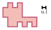

Multiplier par $0{,}6$ revient à diminuer de ${\color{#EB7F73}\boldsymbol{40~\%}}$ car $0{,}6 = 60~\% = 100~\% - 40~\%$.
04
Question
Quel est le périmètre de la figure ci-dessous ?

Le périmètre de cette figure est : ${\color{#EB7F73}\boldsymbol{30}}$ u.l.
05
Question
$\widehat{XRY}$ est un angle :
A. nul B. aigu C. droit D. obtus
$\widehat{XRY}$ est un angle aigu. Un angle aigu est un angle dont la mesure est comprise entre $0°$ et $90°$. Réponse B.
01
Question
Écrire sous la forme de la somme d'un nombre entier et d'une fraction inférieure à 1. $\dfrac{6}{5} = \phantom{00}\text{........}\phantom{00} + \dfrac{\phantom{00}\text{........}\phantom{00}}{\phantom{00}\text{........}\phantom{00}}$
Quelle est l'écriture décimale du nombre dont l'écriture scientifique est $6{,}248\times 10^{3}$ ?
A. $6\,248$ B. $0{,}006\,248$ C. $624{,}8$ D. $6\,000{,}624\,8$
Multiplier par $10^{3}$ revient à multiplier par $1\,000$, donc l'écriture décimale de $6{,}248\times 10^{3}$ est : ${\color{#EB7F73}\boldsymbol{6\,248}}$. La bonne réponse est la réponse A.
03
Question
$51\,941$ est-il divisible par $9$ ?
$5+1+9+4+1=20=9\times 2+2$ La somme des chiffres de $51\,941$ n'est pas divisible par $9$ donc $51\,941$ n'est pas divisible par $9$.
04
Question
Calculer le périmètre exact d'un cercle de diamètre $2~\text{cm}$.
Sur la figure, dans le triangle $FTC$, les droites $(TC)$ et $(XE)$ sont parallèles. Déterminer la longueur $FT$.
Dans le triangle $FTC$, les droites $(TC)$ et $(XE)$ sont parallèles. D'après le théorème de Thalès, on a : $\dfrac{FT}{FE} = \dfrac{TC}{XE}$. En remplaçant par les longueurs : $\dfrac{FT}{FE} = \dfrac{15}{10}=1{,}5$. On en déduit que : $FT = 1{,}5 \times 30 = {\color{#EB7F73}\boldsymbol{45}}~\text{cm}$.
01
Question
$\dfrac{1}{4} +~ \ldots =0{,}33$
Comme $\dfrac{1}{4}=0{,}25$, alors : $\dfrac{1}{4}+ {\color{#EB7F73}\boldsymbol{0{,}08}} =0{,}33$
02
Question
Écrire sous la forme $a^n$ : $A=\dfrac{(-6)^{5}}{(-3)^{5}}$
Les angles $\widehat{xOy}$ et $\widehat{yOz}$ sont adjacents. L'angle $\widehat{xOy}$ mesure $152^\circ$. Combien mesure l'angle $\widehat{yOz}$ s'ils sont supplémentaires l'un de l'autre ?
Deux angles adjacents supplémentaires sont deux angles dont les côtés non communs forment un angle plat. Alors $\widehat{yOz}=180^\circ-152^\circ={\color{#EB7F73}\boldsymbol{28^\circ}}$.